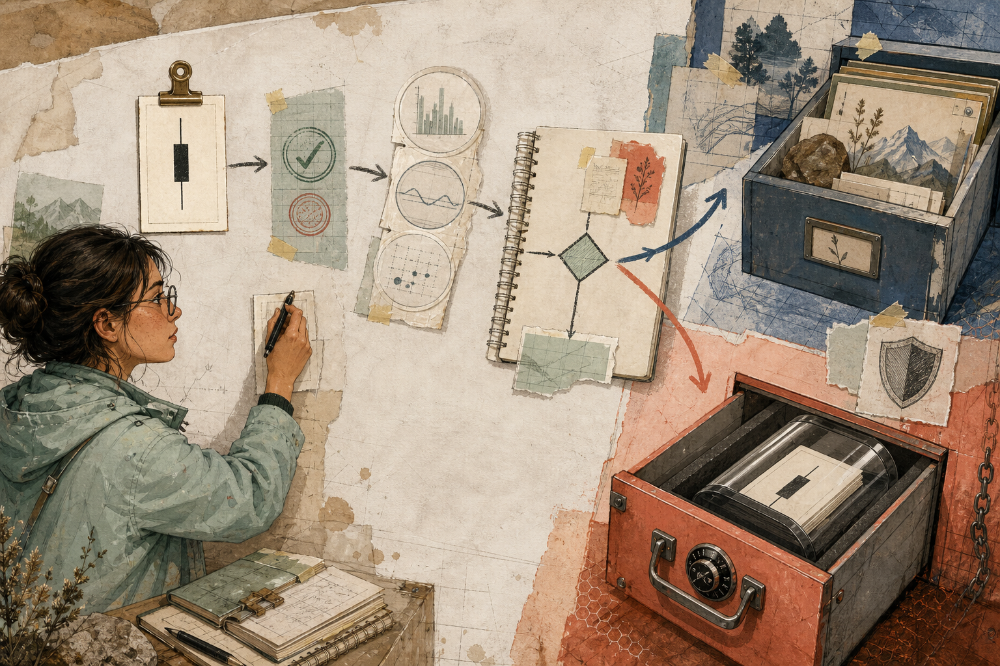

FIELD MAP 01Architecture
Follow one closed candle.
The page bends around the data path: annotations enter from the margins and the two outcomes break the grid.
End-to-end map
Market data → validation → features → pure decision → bounded fork
deterministic replay + reporting
exchange truth + safeguards
No controls
Missing data is a decision
Neutral signal
Blocked entry
Explicit operator error
Text fallback
Mobile: local index becomes disclosure; diagram becomes stacked numbered specimens.